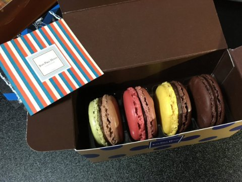
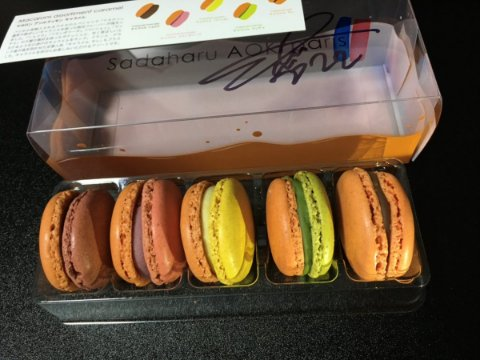

マカロン
2022年2月11日
17:28
2022/02/10
JEAN-PAUL HEVIN
1,306円
濃厚マカロン
たしかにマカロンではあるのだけれど、主役はガナッシュだと思う作り。
さすがチョコレートメインのお店（？）なだけあってガナッシュのチョコレート主張が結構強くてマカロンを食べているというよりマカロンの食感のチョコレートを食べている感じ。
でもこれはこれで好き。
マカロンの生地はサクっと軽めで存在感薄め。いやガナッシュの存在感が強くて相対的に薄く感じているだけかもしれないけど。
マカロンには紅茶を合わせるのが好きだけど、このマカロンは結構濃厚なのでコーヒーのほうが合うと思う！

2022/02/10
sadaharu AOKI paris - マカロン アソルティモンキャラメル
2,160円
いつもの。安定マカロン。開けた瞬間の香ばしい香りがたまらん。
しっかり甘いのにさくさく食べちゃう。
マカロンの生地は結構しっかりしていて食べ応えがある。
ガナッシュとマカロン生地の存在感が同等くらい。
後味にアーモンドの風味を感じられるマカロンらしいマカロン。
相変わらず大好き。迷ったらここのマカロン買っとけば間違いない。たぶん。
私の味覚にはドンピシャ
緑のは今はやりのピスタチオかな？って思ってみたら抹茶だった。
もしかして今はやってるの日本だけなのか。
抹茶は餡子と合う。つまりはキャラメルにも合うに決まってるんだよなあ（？）
余談なんですけど実は今までシェフの顔を知らずに買ってて後で調べてわかったんだけどどうやら接客してもらったのシェフだったみたい。
シェフ来てるお店多かったし着てる服からしてそれっぽかったからおや？とは思ったけど確信はなかったんだよね。本物だったかあ。シェフがきてたからサイン入ってるのかな。
めちゃくちゃ人の良さそうな顔をしてて逆に浮いてるな…とおもったりしました。ほら、なんかああいうイケイケキラキラのお店のシェフって尖った雰囲気の人多くない？多いと思う。

s
OneNote で作成されました。